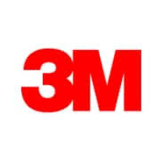
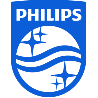
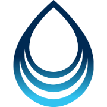
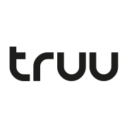
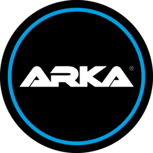
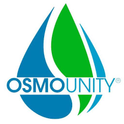
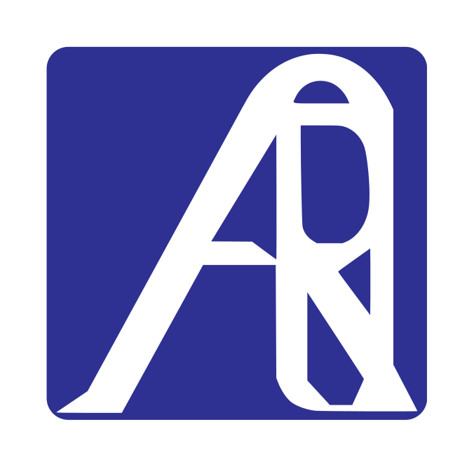
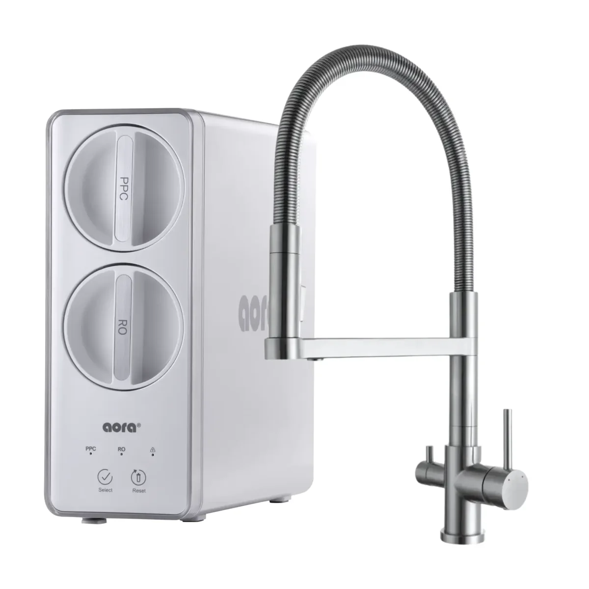
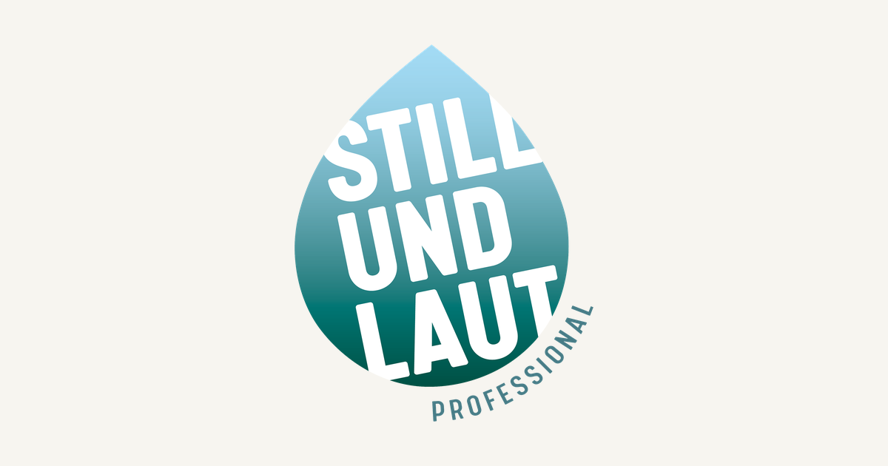

Marken für Wassertechnologie
84 bekannte Hersteller aus dem Bereich Wasserfiltration und Wasseraufbereitung.
BLACKWATER
Deutsche Wassertechnologie-Marke für Filtersysteme, Duschfilter und Wasserstoffwasser-Produkte.
Marke ansehen →Pentair
Wasseraufbereitung, Filtration, Pumpen sowie Lösungen für Haushalt, Gewerbe und Industrie.
Marke ansehen →
Pentek
Eine Pentair-Marke für Filtergehäuse, Kartuschen und Komponenten der Hauswasserfiltration.
Marke ansehen →
3M
Diversifiziertes Technologieunternehmen mit Trinkwasser-, Gastronomie- und Gewerbefiltern.
Marke ansehen →
Culligan
Globaler Anbieter von Enthärtungsanlagen, Trinkwassersystemen und gewerblicher Wasseraufbereitung.
Marke ansehen →
A.O. Smith
Hersteller von Warmwasser- und Wasseraufbereitungsprodukten für Haushalte und Unternehmen.
Marke ansehen →Bluewater
Schwedisches Unternehmen für kompakte Umkehrosmose- und Hydrationslösungen.
Marke ansehen →
BWT
Europäische Wassertechnologie-Gruppe für Haushalt, Gastronomie, Pharma und Industrie.
Marke ansehen →Atlas Filtri
Italienischer Hersteller von Filtergehäusen, Kartuschen und Wasseraufbereitungssystemen.
Marke ansehen →CARBONIT
Deutscher Spezialist für Aktivkohle-Trinkwasserfilter und Ersatzkartuschen.
Marke ansehen →Kinetico
Wasseraufbereitungsmarke, bekannt für stromlose Enthärter und Trinkwassersysteme.
Marke ansehen →
WALUTEC
Wassertechnologie-Marke mit Filtration, Umkehrosmose und Wasserstoffwasser-Produkten.
Marke ansehen →Aquaphor
Entwickler von Haushaltsfiltern, Umkehrosmoseanlagen und eigenen Sorptionsmaterialien.
Marke ansehen →
Waterdrop
Marke für tanklose Umkehrosmoseanlagen und Kühlschrankfilter.
Marke ansehen →iSpring
Anbieter von Umkehrosmose-, Haus- und Auftischfiltersystemen.
Marke ansehen →APEC Water Systems
US-Marke mit Schwerpunkt auf Umkehrosmose-Trinkwassersystemen für Haushalte.
Marke ansehen →Home Master
Marke für modulare RO-Systeme und Permeatpumpen im Haushaltsbereich.
Marke ansehen →Express Water
Anbieter von Untertisch-RO, Hausfiltration und Ersatzfiltern.
Marke ansehen →PurePro
Hersteller von Umkehrosmoseanlagen, Komponenten und gewerblicher Wassertechnik.
Marke ansehen →Crystal Quest
Wasseraufbereitungsunternehmen mit Haushalts-, Gewerbe- und Spezialfiltern.
Marke ansehen →Canature
Hersteller von Wasseraufbereitungssystemen und Komponenten für Haushalt und Gewerbe.
Marke ansehen →AquaTru
Marke für einfach installierbare Auftisch-Umkehrosmosegeräte.
Marke ansehen →Coway
Koreanischer Haushaltsgerätehersteller für Wasserreiniger, Luftreiniger und Wellnessprodukte.
Marke ansehen →
LG
Globaler Elektronikkonzern mit Wasserreinigern und vernetzten Haushaltsgeräten in ausgewählten Märkten.
Marke ansehen →Panasonic
Japanisches Technologieunternehmen mit Wasserfiltern für Armatur, Auftisch und Haushalt.
Marke ansehen →
Philips
Gesundheitstechnologie-Marke mit Wasserspendern, Filtern und Haushaltsgeräten.
Marke ansehen →Xiaomi
Elektronikunternehmen mit smarten Wasserreinigern und vernetzten Küchengeräten.
Marke ansehen →Viomi
Smart-Home-Hersteller mit vernetzten Umkehrosmose- und Auftisch-Wasserreinigern.
Marke ansehen →Angel
Hersteller von Trinkwasseraufbereitung für Haushalt und Gewerbe.
Marke ansehen →
Qinyuan
Chinesisches Unternehmen für Haushalts-Wasserreiniger und Trinkwassertechnik.
Marke ansehen →Midea
Globaler Haushaltsgerätehersteller mit Wasserspendern, Reinigern und Küchensystemen.
Marke ansehen →Haier
Haushaltsgeräte-Gruppe mit Wasserreinigern und Smart-Home-Produkten.
Marke ansehen →Echo Water
Wasserstoffwasser-Marke mit Geräten, Flaschen und Hydrationsprodukten.
Marke ansehen →Tyent
Hersteller von Wasserionisierern und alkalischen Wasserstoffwassersystemen.
Marke ansehen →Lourdes
Marke für Wasserstoffwasser-Generatoren und Wellnessgeräte.
Marke ansehen →Piurify
Verbrauchermarke für Wasserstoffflaschen und Auftisch-Generatoren.
Marke ansehen →AlkaViva
Marke für Wasserionisierer, alkalisches Wasser und wasserstoffreiches Wasser.
Marke ansehen →Fujiiryoki
Japanischer Wellnessgerätehersteller mit Wasserionisierern und Gesundheitsprodukten.
Marke ansehen →DuPont
Globales Materialunternehmen für Membranen, Ionenaustauscher und Wasserprozess-Technologien.
Marke ansehen →Hydranautics
Membranhersteller für Umkehrosmose, Nanofiltration und Ultrafiltration.
Marke ansehen →
Toray
Japanischer Materialkonzern mit RO-, UF- und MBR-Membranen.
Marke ansehen →
LG Water Solutions
Membranbereich für kommunale und industrielle Umkehrosmoseanwendungen.
Marke ansehen →Koch Separation Solutions
Industrieunternehmen für Membran- und Trennprozess-Technologien.
Marke ansehen →Veolia Water Technologies
Globaler Anbieter für kommunale und industrielle Wasser- und Abwasseraufbereitung.
Marke ansehen →
SUEZ Water Technologies
Wasser- und Umweltdienstleister mit Aufbereitungstechnologien und Infrastrukturkompetenz.
Marke ansehen →Grundfos
Globaler Pumpenhersteller für Dosierung, Zirkulation und Wasseraufbereitung.
Marke ansehen →
Vontron
Hersteller von Umkehrosmose- und Nanofiltrationsmembranen.
Marke ansehen →LANXESS
Spezialchemie-Unternehmen für Ionenaustauscherharze und Wasseraufbereitungsmaterialien.
Marke ansehen →
BRITA
Deutsche Wasserfiltermarke für Kannen, Spender und professionelle Filtersysteme.
Marke ansehen →
truu
Deutscher Anbieter hochwertiger mehrstufiger Wasserfiltrationssysteme.
Profil ansehen →MisterWater
Anbieter von Wasserfilter- und Umkehrosmosesystemen für den Haushalt.
Profil ansehen →
OsmoFresh
Deutscher Anbieter von Auftisch- und Direct-Flow-Umkehrosmoseanlagen.
Profil ansehen →
Greifenstein Wasserveredelung
Entwickler und Hersteller von Umkehrosmose- und Wasseraufbereitungsanlagen.
Profil ansehen →
Gewapur
Anbieter von Direct-Flow-Wasserfiltersystemen und Umkehrosmoseanlagen.
Profil ansehen →
Aqmos
Anbieter von Wasserenthärtungs-, Filter- und Umkehrosmosetechnik.
Profil ansehen →
Wasserhaus
Deutscher Hersteller und Fachanbieter für Umkehrosmose- und Filtersysteme.
Profil ansehen →Arktisquelle
Anbieter kompakter Osmose-Wasserfilter für den Haushalt.
Profil ansehen →
myAqua
ARKA-Produktlinie leistungsstarker Umkehrosmoseanlagen für Aquaristik.
Profil ansehen →
Purway
Wasserfilter- und Direct-Flow-Umkehrosmosesysteme für Haushalt und Gewerbe.
Profil ansehen →
Osmounity
Anbieter tankloser Direct-Flow-Umkehrosmosesysteme.
Profil ansehen →
WasserWelt
Marke für Direct-Flow-Wasseraufbereitungssysteme.
Profil ansehen →
Grünbeck
Deutscher Hersteller von Wasseraufbereitungslösungen für Haushalt, Gewerbe und Industrie.
Profil ansehen →
JUDO
Deutscher Hersteller von Wasseraufbereitungs- und Heizungsbefüllsystemen.
Profil ansehen →
Alfiltra
Fachanbieter für Enthärtungs-, Filter- und Umkehrosmoseanlagen.
Profil ansehen →
AQUION
Anbieter von Wasserionisierern und alkalischen Wasseraufbereitungssystemen.
Profil ansehen →
Quooker
Hersteller multifunktionaler Küchenarmaturen für kaltes, heißes, kochendes und gekühltes Wasser.
Profil ansehen →
GROHE Blue
GROHE-Systeme für gefiltertes, gekühltes und karbonisiertes Trinkwasser.
Profil ansehen →
Franke
Hersteller von Küchenlösungen und multifunktionalen Trinkwassersystemen.
Profil ansehen →BLANCO
Hersteller modularer Küchen-Wasserplätze, Armaturen und DRINK.SYSTEMS.
Profil ansehen →
Aqua Global
Anbieter kompakter Umkehrosmose-Wasserbars für flexible Aufstellung.
Profil ansehen →Bela Aqua
Anbieter von Direct-Flow- und Tank-Umkehrosmoseanlagen für Trinkwasser.
Profil ansehen →WERTACH
Gourmetwasser-, Umkehrosmose- und Remineralisierungssysteme für Haushalt und unterwegs.
Marke ansehen →
AQUAPRO
Anbieter von Wasseraufbereitungs-, Umkehrosmose- und Filtersystemen für Haushalt und Gewerbe; offizieller Distributor für den Nahen Osten und Afrika.
Profil ansehen →HO3 Filter
Deutsche Wasserfiltermarke für Auftisch-Umkehrosmoseanlagen mit UV-Hygieneschutz, Heißwasserfunktion und optionaler Mineralisierung.
Profil ansehen →
AORA
AORA bietet Systeme und Produkte für Trinkwasserfiltration, Umkehrosmose und Wasseraufbereitung. Die Datenbank führt die offiziell veröffentlichten Modelle und technischen Eigenschaften.
Marke ansehen →HappyFilter
HappyFilter bietet Systeme und Produkte für Trinkwasserfiltration, Umkehrosmose und Wasseraufbereitung. Die Datenbank führt die offiziell veröffentlichten Modelle und technischen Eigenschaften.
Marke ansehen →
Osmotech
Osmotech bietet Systeme und Produkte für Trinkwasserfiltration, Umkehrosmose und Wasseraufbereitung. Die Datenbank führt die offiziell veröffentlichten Modelle und technischen Eigenschaften.
Marke ansehen →
ROWA 4 you
ROWA 4 you bietet Systeme und Produkte für Trinkwasserfiltration, Umkehrosmose und Wasseraufbereitung. Die Datenbank führt die offiziell veröffentlichten Modelle und technischen Eigenschaften.
Marke ansehen →SONVITA
SONVITA bietet Systeme und Produkte für Trinkwasserfiltration, Umkehrosmose und Wasseraufbereitung. Die Datenbank führt die offiziell veröffentlichten Modelle und technischen Eigenschaften.
Marke ansehen →
SPRUDELUX
SPRUDELUX bietet Systeme und Produkte für Trinkwasserfiltration, Umkehrosmose und Wasseraufbereitung. Die Datenbank führt die offiziell veröffentlichten Modelle und technischen Eigenschaften.
Marke ansehen →Wasserladen
Wasserladen bietet Systeme und Produkte für Trinkwasserfiltration, Umkehrosmose und Wasseraufbereitung. Die Datenbank führt die offiziell veröffentlichten Modelle und technischen Eigenschaften.
Marke ansehen →
stillundlaut
stillundlaut bietet Systeme und Produkte für Trinkwasserfiltration, Umkehrosmose und Wasseraufbereitung. Die Datenbank führt die offiziell veröffentlichten Modelle und technischen Eigenschaften.
Marke ansehen →